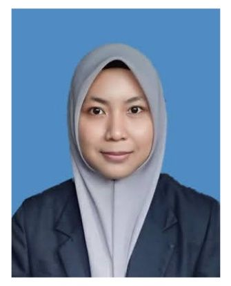

ASMA MOHD ABD GHANI

PROFILE SUMMARY
Looking to leverage my positive attitude and commitment to new continuous professional growth into Web Developer. I had more than one year of experience in Project Development / Customer Service / Management Systems, I am an expert in data analysis, managing relationships with customers, and helping organizations to achieve goals through teamwork and collaboration.
WORK EXPERIENCE
AceTeam Networks Sdn Bhd
Network Security Engineer
Sept 2023 - Present
- Provide operation support for network security firewall and switches which include Palo Alto Network firewall, F5 Load Balancer, Aruba, and Cisco.
- Assisted in resolving network incidents, and maintaining uninterrupted network operations.
- Assessed service and change requests for production implementation, implementing changes while minimizing disruptions to network availability.
APM Automotive Holdings Berhad
Quality Assurance Executive
Jan 2022 - Sept 2023
- Developed & implemented quality standards for innovative automotive projects, resulting in customer satisfaction & minimization of product defects.
- Guided quality control teams to improve effectiveness of customer service operations, boosting delivery accuracy rates.
- Conducted root cause analysis on a product issue and implemented corrective actions that resulted in a reduction
of defects.
Radicare Sdn Bhd, Klang Hospital.
Service Engineer Trainee
Jun 2019 - Aug 2019
- Responsible to monitor medical devices used in hospital and adhere to all related legal requirements under biomedical services.
- Carry out all scheduled and assigned warranty, preventive, breakdown service jobs & user training effectively to
aim for zero complaint.
- Serve and assist the user in the matter related to all technical issues when required.
EDUCATION
Universiti Malaysia Perlis (UniMAP)
Bachelor of Engineering (Honours) Biomedical Electronics Engineering
PROJECT EXPERIENCE
AceTeam Networks Sdn Bhd
Data Center Modernization Project at Maxis Broadband Sdn Bhd
- Support data center modernization project, resulting reduction in security incidents and ensuring the confidentiality and integrity of information (Migration of legacy device to Cisco).
APM Automotive Holdings Berhad
New Alza and Axia Vehicle Seat Development project
- Developed product quality plans, collaborated with cross-functional teams to advance sustainability initiatives, implement a new system for quality control tracking resulting in improved customer satisfaction and an improvement in product quality
SKILLS, CERTIFICATES & INTERESTS
ACADEMIC ACHIEVEMENTS
- UniMAP Bestari's Award (2016-2019)
- ROTU Army Academic's Award (2016-2019)
CONTINUOUS LEARNING AND PERSONAL DEVELOPMENT
- Practice writing clean, well-structured code by working on small projects
- amiliarize with front-end frameworks such as React.js to stay current with industry trends.
- Learn about responsive web design techniques to ensure websites adapt seamlessly across various devices.
- Explore version control systems like GitHub to manage project code efficiently.
SOFTWARE PROFICIENCY
- Microsoft Office (Excel, Word, PowerPoint, Outlook)
- CISCO PACKET TRACER | MATLAB | LABVIEW | AUTOCAD | SOLIDWORKS
- ISUAL STUDIO CODE (HTML, CSS, JavaScript)
SHORT COURSES
- IATF 16949:2016 Requirements | ISO 9001 Internal Audit | Advanced Product Quality Planning (APQP)
- The Complete 2024 Web Development Bootcamp, On-going
LANGUAGE PROFICIENCY
- Malay
- English (MUET Band 4)
EXTRA-CURRICULAR ACTIVITIES
- Commissioning Parade (2019)
- Multicultural Night Event (2018)
- Youngpreneurs Go Carnival (2017)
LEARDERSHIP EXPERIENCE
APM Automotive Holdings Berhad
Quality Section Leader
- Developed and implemented a training program for new inspectors that improved their accuracy by 30%, advise leadership team on quality control and managing manpower, conduct interview, and assessment.
UniMAP Reserve Officer Training Unit (ROTU)
Second Lieutenant
- Led a platoon of cadet officer, effectively managing their training and development, demonstrated exceptional leadership under pressure, maintaining composure and making effective decisions during high-stress situations.
Contact Me
Kuala Lumpur, Malaysia | 011-35060926 | asmaghani2202@gmail.com
www.linkedin.com/asmaghani
www.github.com/ByAsmaGhani